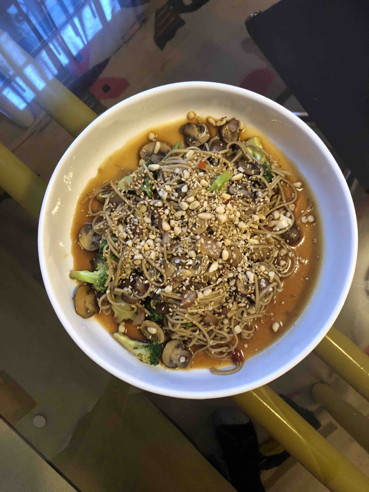

Secret Sauce

Ingredients
- 1/4 Cup Soy Sauce
- 1 tbspn Chinese Black Vinegar
- 1 tbspn Rice Vinegar
- 1/4 cup Sesame Oil
- 1/4 cup Vegetable Oil
- 1 large clove Garlic
- 1 knob Ginger
- 1 tbspn Szechuan Peppercorns
- 3-4 Dried Chili Peppers
- 1 tbspn Chili Crisp
Steps
- Chop one large clove of garlic and one knob of ginger. Combine in mixing bowl and set aside.
- Heat 1/4 cup of vegetable oil in small skillet. When hot, add a table spoon of szechuan peppercorns and 3-4 chili peppers. Turn heat off and let sit fo at least 5 minutes.
- Combine remaining ingredients into bowl with ginger and garlic. Add oil from peppercorns and chili peppers. Whisk to combine.
- Add to any dish or put in jar for later use.